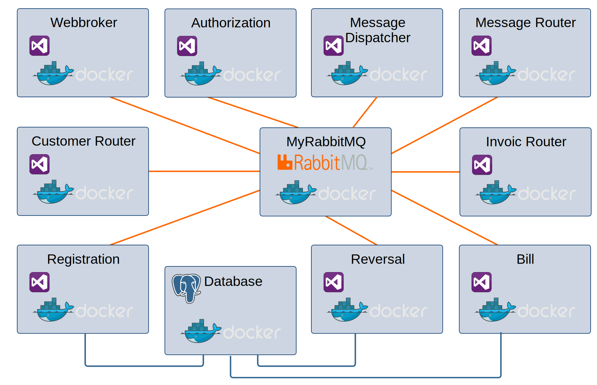

Microservices mit RabbitMQ
Magdeburger Developer Days 2018
11.04.2018
Frank Pommerening
- Senior - Softwareentwickler
- Consultant
- Softwarearchitekt
frank@pommerening-online.de
Gründung: Mai 2012
Anzahl Mitarbeiter: 8 feste
Branchenfokus: Energiebranche
- Consulting (fachlich & IT)
- Requirements Engineering / Projektmanagement
- IT-Fachprozess-Analyse / Dokumentation
- Software-Entwicklung
- Microservices, SOA, REST, OOA und OOD
- Microsoft Technologien z.B. .NET (C#), WPF, WCF
- Datenbanken (MS SQL Server / Oracle / MongoDB)
Microservices ?!
RabbitMQ - ein Überblick
Was ist RabbitMQ?
- Message Broker / Queue Manager
- System um Queues zu verwalten
- Nachrichten von Systemen empfangen
- Nachrichten zwischenspeichern
- Nachrichten nach Regeln an Systeme zustellen
- Erstellt in Erlang / OTP
- Erlaubt Entkopplung von unterschiedlichen und unabhängigen Anwendungen
Nachrichtentransport
12 Begriffe sollt ihr sein
AMQP (Advanced Message Queuing Protocol)
Protokoll zur Kommunikation über Systemgrenzen
Produzent (Producer) Anwendung, die eine Nachricht erstellt
Konsument (Consumer) Anwendung, die eine Nachricht empfängt
Nachricht (Message)
Information, die zwischen Produzent und Konsument ausgetauscht wird
Warteschlange (Queue)
Speichert die Nachrichten zwischen
Verbindung (Connection)
TCP Netzwerkverbindung zwischen Anwendung und RabbitMQ broker
Channel
Virtuelle Verbindung innerhalb der TCP-Verbindung
Binding
Verknüpfung zwischen Queue und Exchange
Routing key
"Adresse", nach welcher der Exchange entscheidet, in welche Queue er die Nachricht leitet.
Benutzer (User)
- Zugangsdaten (Benutzername / Password) für RabbitMQ
- Zuordnung von Rechten (Lesen, Schreiben, Konfigurieren etc.)
- Definition global oder für einen spezifischen virtuellen Host
Vhost (virtual host) Erlaubt, Anwendung auf einer RabbitMQ Instanz zu isolieren
Exchange
- Fanout Exchange
- Eingehende Nachrichten werden an alle verbunden Queues gesendet
- Keine Beachtung der Binding-Konfiguration
- Direct Exchange
- Producer erstellt Routing Key
- Binding Key der Queue muss exakt passen
- Topic
- Ähnlich dem Direct Exchange
- Einsatz von Platzhaltern, z.B. Wort (*) / mehrere Worte (#)
- Header Exchange
- Routing anhand von Headerinformationen der Nachricht
RabbitMQ - Installation
Installation Windows
Erlang OTP Download (Voraussetzung)RabbitMQ Download
Installation Linux
apt-get install rabbitmq-server
Management Plugin
InfosDocker
Standardimage auf DockerhubStarten RabbitMQ Instanz
$ docker run -d --hostname my-rabbit --name firstRabbit rabbitmq:3
Starten mit Management Plugin
$ docker run -d --hostname myRabbit --name myRabbit
-p 5672:5672 -p 15672:15672 rabbitmq:3-management
EasyNetQ
- Einfach
- Open Source
- Modular
Warum nicht direkt
Subscriber
var factory = new ConnectionFactory() { HostName = "localhost" };
using (var connection = factory.CreateConnection())
using (var channel = connection.CreateModel())
{
channel.ExchangeDeclare(exchange: "logs", type: "fanout");
var queueName = channel.QueueDeclare().QueueName;
channel.QueueBind(queue: queueName, exchange: "logs",
routingKey: "");
var consumer = new EventingBasicConsumer(channel);
consumer.Received += (model, ea) =>{
var message = Encoding.UTF8.GetString(ea.Body);
DoSomething(MyMessage.Deserialize(message)); };
channel.BasicConsume(queue: queueName, noAck: true,
consumer: consumer);
}
var factory = new ConnectionFactory() { HostName = "localhost" };
using (var connection = factory.CreateConnection())
using (var channel = connection.CreateModel())
{
channel.ExchangeDeclare(exchange: "logs", type: "fanout");
var message = new MyMessage {Content = "Hallo Welt"};
var body = Encoding.UTF8.GetBytes(message.Serialize());
channel.BasicPublish(exchange: "logs", routingKey: "",
basicProperties: null, body: body);
}
Vorteile
- Messaging Pattern, z.B. Publish/Subscribe
- Routing Strategien
- Serialisierung / Deserialisierung als JSON (lesbar)
- Handling von Thread für Konsumenten
- Subscriber Reconnect
- QoS / publisher confirm
- Fehlerbehandlung
API Design
EasyNetQ Einstieg
Verbindungsaufbau
using System;
using EasyNetQ;
namepace FP.MsRmq.Connecting
{
public class Programm
{
public static void Main(string[] args)
{
var myBus = RabbitHutch.CreateBus("host=myRabbitMQ");
}
}
}
Verbindungsoptionen
| Option | Standardwert | Bemerkung |
|---|---|---|
| host | 5672 | DNS-Name/IP[:Port] |
| username | guest | |
| passwort | guest | |
| prefetchcount | 50 | Anzahl der Nachrichten, die gleichzeitig abgerufen werden |
| timeout | 10 | timeout in Sekunden |
| publisherConfirms | false | Erzwingt eine Annahmebestätigung |
Publish / Subscribe
Sendet eine Nachricht an beliebig viele EmpfängerWenn kein Empfänger definiert wurde, geht Nachricht verloren (keine Speicherung / Verarbeitung)
Zieltypen der Bestellung müssen übereinstimmen
Polymorphy ist möglich
myBus.Subscribe<MyClass>("MySub",
msg => DoSomething(msg));
myBus.SubscribeAsync<MyClass>("MySubAsync",
msg => DoSomethingAsync(msg));
var msg = new MyClass{};
myBus.Publish(msg);
myBus.PublishAsync(msg);
Topic Based Routing
Sonderform des Publish / SubscribeNeben dem Zieltyp muss auch das Thema (Topic) passen
Im Thema sind Platzhalter möglich
myBus.Subscribe<MyClass>("MyTopicSub",
msg => DoSomething(msg), x => x.WithTopic("MyTopic"));
var msg = new MyClass{};
myBus.Publish(msg, "MyTopic");
Request / Response (RPC)
Sendet eine Nachricht und erwartet eine AntwortMatching über Typen der Anfrage und der Antwort
Exception, wenn Antwort nicht innerhalb Timeout
myBus.Respond<MyClass1,MyClass2>(DoSometingWithResult);
myBus.RespondAsync<MyClass1,MyClass2>(DoSometingAsyncWithResult);
var req = new MyClass1{};
var result = myBus.Request<MyClass1,MyClass2>(req);
var result = await myBus.RequestAsync<MyClass1,MyClass2>(req);
Send / Receive (Command Pipelines)
Command PipelinesQueue enthält Nachrichten verschiedener Typen
Bestellung wird auf den Nachrichtentyp eingegrenzt
Nicht zustellbare Nachrichten werden in Error-Queue übertragen
myBus.Receive("MyMessageQueue", x => x
.Add<MyClassA>(DoSomethingWithA)
.Add<MyClassB>(DoSomethingWithB);
myBus.Send("MyMessageQueue", new MyClassA {});
myBus.Send("MyMessageQueue", new MyClassB {});